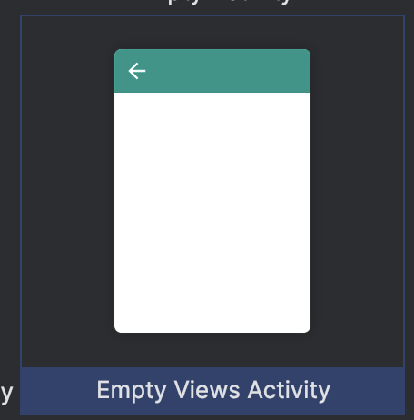
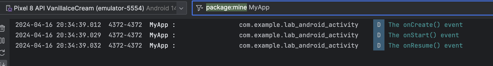
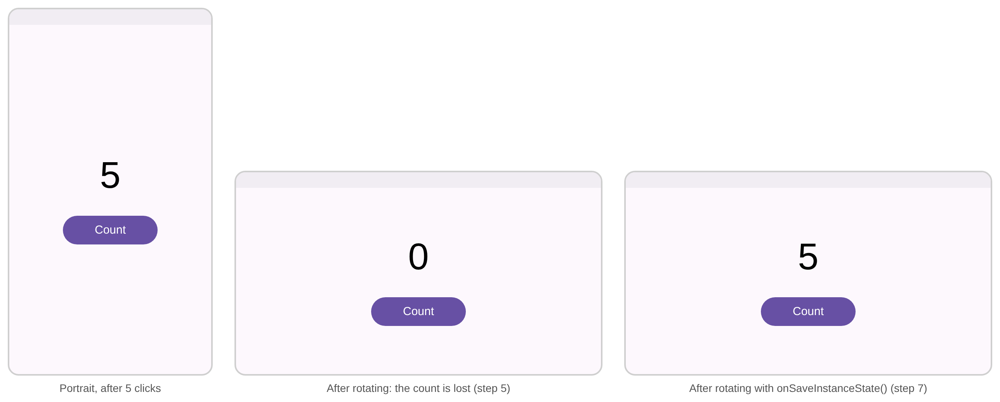
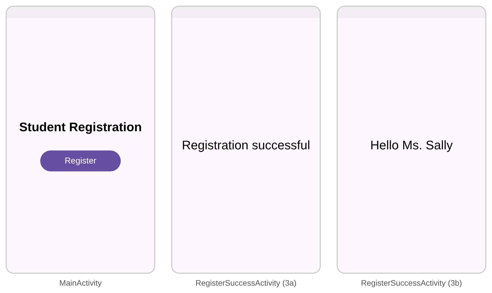
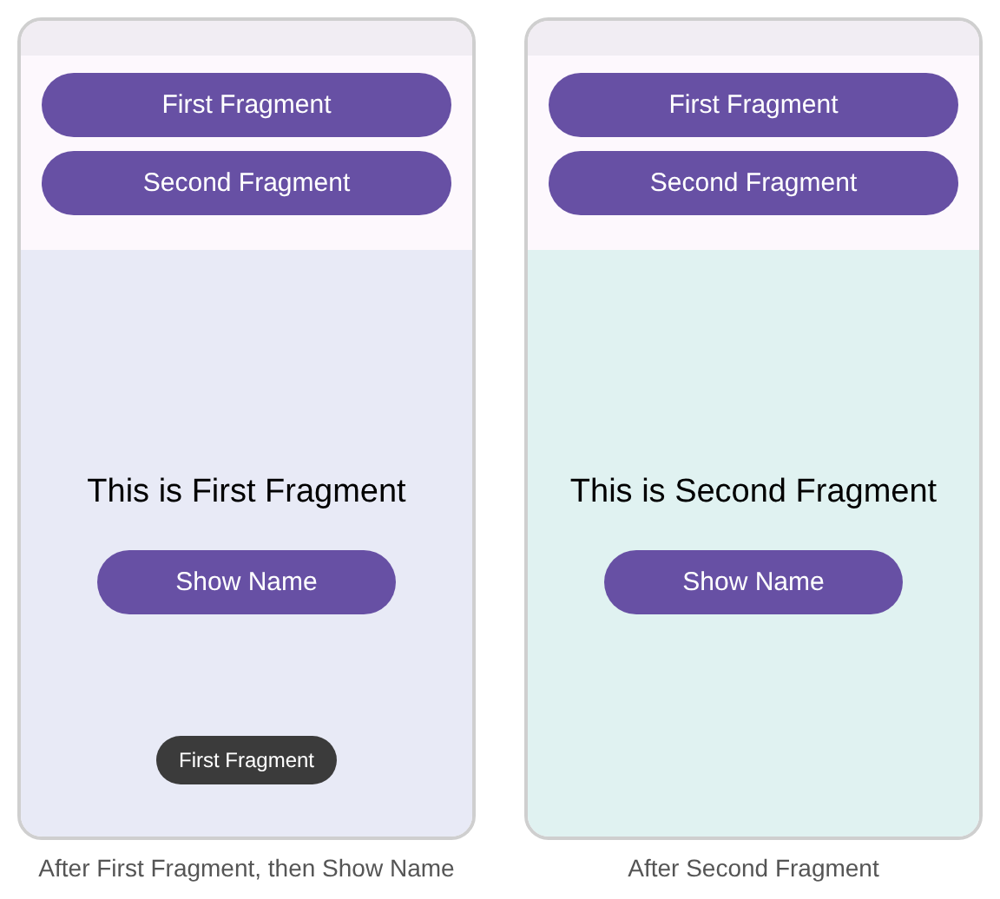

Introduction
Lab Activity 4 · Week 5 · CSC557 Mobile Programming
Objectives
- Activity lifecycle
- Handling screen rotation (saving and restoring the Activity state)
- Starting an activity using an Intent
- Passing values between activities using the Intent’s
putExtra() - Using Fragments
Duration: 2 hours. You need: Android Studio and an emulator or Android phone.
| Part | What you do | Time | Marks |
|---|---|---|---|
| Activity 1: Activity Lifecycle | Log every lifecycle callback in Logcat | 20 min | 6 |
| Activity 2: Screen Rotation | Keep a counter when the screen rotates | 20 min | 4 |
| Activity 3a: Start an Activity | Open RegisterSuccessActivity with an Intent | 15 min | – |
| Activity 3b: Passing values | Send values to RegisterSuccessActivity with putExtra() | 20 min | 6 |
| Activity 4: Using Fragment | Swap two Fragments in one screen | 35 min | 8 |
| Submit | Screenshots and code in one PDF | 10 min | – |
| Total | 120 min | 24 |
Activity 1 – Activity Lifecycle
- Create a new Android project named
Lifecycleusing the Java language. Choose Empty Views Activity as the template.
- Open MainActivity.java. Add the logging import, the
labelvariable, a log line at the end ofonCreate(), and the six other lifecycle methods. Do not change the code the template generated.java/com/example/lifecycle/MainActivity.javapackage com.example.lifecycle;import android.os.Bundle;import android.util.Log; // lets us write to the application log// ... the androidx imports from the template stay ...public class MainActivity extends AppCompatActivity { String label = "MyApp : "; // logs label. Change this to your name /** Called when the activity is first created. */ @Override protected void onCreate(Bundle savedInstanceState) { super.onCreate(savedInstanceState); EdgeToEdge.enable(this); setContentView(R.layout.activity_main); ViewCompat.setOnApplyWindowInsetsListener(findViewById(R.id.main), (v, insets) -> { Insets systemBars = insets.getInsets(WindowInsetsCompat.Type.systemBars()); v.setPadding(systemBars.left, systemBars.top, systemBars.right, systemBars.bottom); return insets; }); // Log.d() is used to write content to the debug logs Log.d(label, "The onCreate() event"); } /** Called when the activity is about to become visible. */ @Override protected void onStart() { super.onStart(); Log.d(label, "The onStart() event"); } /** Called when the activity has become visible. */ @Override protected void onResume() { super.onResume(); Log.d(label, "The onResume() event"); } /** Called when another activity is taking focus. */ @Override protected void onPause() { super.onPause(); Log.d(label, "The onPause() event"); } /** Called when the activity is no longer visible. */ @Override protected void onStop() { super.onStop(); Log.d(label, "The onStop() event"); } /** Called when the activity is to be visible again. */ @Override protected void onRestart() { super.onRestart(); Log.d(label, "The onRestart() event"); } /** Called just before the activity is destroyed. */ @Override protected void onDestroy() { super.onDestroy(); Log.d(label, "The onDestroy() event"); }}Yellow lines are the ones you add. Grey italic lines stand for code that is already there.
- Run the app.
- Open the Logcat window and filter the logs by our log label: type
MyAppin the filter box. You will see the following:
- These methods are called when the app is first starting up. The order is
onCreate()→onStart()→onResume(). - Now hide the app in the background with the swipe-up gesture. Take a look at the Logcat to answer the questions below.
Questions 1 and 2
Question 1: Which callback methods are called when you hide the app in the background?
Question 2: Which callback methods are called when you:
a. refocus back to the app;
b. terminate the app?
Activity 2 – Screen Rotation
Rotating the screen is a configuration change. Android destroys the activity and creates a new one, so any value kept in the activity is lost unless you save it.
- Continue with the Lifecycle project. On the emulator, turn on Auto-rotate: swipe down from the top of the screen twice and tap Auto-rotate.
- Run the app and rotate the device with the rotate buttons on the emulator toolbar. In Logcat you will see the activity destroyed and created again:
onPause()→onStop()→onDestroy()→onCreate()→onStart()→onResume(). - Open res/layout/activity_main.xml in Code view. Replace the “Hello World!” TextView with a counter TextView and a Count button:
res/layout/activity_main.xml (inside the ConstraintLayout)
<TextView android:id="@+id/tvCount" android:layout_width="wrap_content" android:layout_height="wrap_content" android:text="0" android:textSize="48sp" app:layout_constraintBottom_toBottomOf="parent" app:layout_constraintEnd_toEndOf="parent" app:layout_constraintStart_toStartOf="parent" app:layout_constraintTop_toTopOf="parent" /> <Button android:id="@+id/btnCount" android:layout_width="wrap_content" android:layout_height="wrap_content" android:layout_marginTop="24dp" android:onClick="countBtnClicked" android:text="Count" app:layout_constraintEnd_toEndOf="parent" app:layout_constraintStart_toStartOf="parent" app:layout_constraintTop_toBottomOf="@id/tvCount" />android:onClick="countBtnClicked"tells Android to call the methodcountBtnClicked(View view)in MainActivity when the button is clicked. - In MainActivity.java, add two imports, two variables, one line at the end of
onCreate(), and thecountBtnClicked()method:java/com/example/lifecycle/MainActivity.javaimport android.view.View;import android.widget.TextView;public class MainActivity extends AppCompatActivity { String label = "MyApp : "; int count = 0; // number of clicks TextView tvCount; // shows the count @Override protected void onCreate(Bundle savedInstanceState) { // ... template code and Log.d stay ... tvCount = findViewById(R.id.tvCount); } /** onClick() action handler for the Count button */ public void countBtnClicked(View view) { count++; tvCount.setText(String.valueOf(count)); } // ... the lifecycle methods from Activity 1 stay ...} - Run the app and click Count five times. Now rotate the device. The counter goes back to 0, because the new activity object starts again with
count = 0. - To keep the value, save it in
onSaveInstanceState()before the activity is destroyed, and read it back inonCreate(). Add this method to MainActivity, and theifblock at the end ofonCreate():java/com/example/lifecycle/MainActivity.java@Override protected void onCreate(Bundle savedInstanceState) { // ... template code and Log.d stay ... tvCount = findViewById(R.id.tvCount); // restore the saved value after a rotation // (savedInstanceState is null when the app starts for the first time) if (savedInstanceState != null) { count = savedInstanceState.getInt("count"); tvCount.setText(String.valueOf(count)); } } /** Called before the activity may be destroyed, to save its state. */ @Override protected void onSaveInstanceState(Bundle outState) { super.onSaveInstanceState(outState); outState.putInt("count", count); Log.d(label, "The onSaveInstanceState() event"); } - Run the app again, click Count five times and rotate the device. This time the value is kept.

What you should see in steps 5 and 7
Question 3: Screen rotation
Which callback methods are called, in order, when you rotate the device after step 6?
Activity 3a – Start an Activity using Intent
You will build an app with two screens. Clicking Register in MainActivity opens RegisterSuccessActivity.

- Create a new project named
Register(Empty Views Activity, Java). - Replace the whole of res/layout/activity_main.xml with this layout: a title and a Register button.
res/layout/activity_main.xml
<?xml version="1.0" encoding="utf-8"?><androidx.constraintlayout.widget.ConstraintLayout xmlns:android="http://schemas.android.com/apk/res/android" xmlns:app="http://schemas.android.com/apk/res-auto" xmlns:tools="http://schemas.android.com/tools" android:id="@+id/main" android:layout_width="match_parent" android:layout_height="match_parent" tools:context=".MainActivity"> <TextView android:id="@+id/tvTitle" android:layout_width="wrap_content" android:layout_height="wrap_content" android:text="Student Registration" android:textSize="24sp" android:textStyle="bold" app:layout_constraintBottom_toTopOf="@id/btnRegister" app:layout_constraintEnd_toEndOf="parent" app:layout_constraintStart_toStartOf="parent" app:layout_constraintTop_toTopOf="parent" app:layout_constraintVertical_chainStyle="packed" /> <Button android:id="@+id/btnRegister" android:layout_width="wrap_content" android:layout_height="wrap_content" android:layout_marginTop="32dp" android:onClick="registerBtnClicked" android:text="Register" app:layout_constraintBottom_toBottomOf="parent" app:layout_constraintEnd_toEndOf="parent" app:layout_constraintStart_toStartOf="parent" app:layout_constraintTop_toBottomOf="@id/tvTitle" /></androidx.constraintlayout.widget.ConstraintLayout>When the user clicks Register, the method
registerBtnClicked()in MainActivity is called (set byandroid:onClick). - Add the second activity: File › New › Activity › Empty Views Activity. Name it
RegisterSuccessActivityand leave Launcher Activity unticked. Android Studio createsRegisterSuccessActivity.java,activity_register_success.xml, and adds the activity to AndroidManifest.xml:manifests/AndroidManifest.xml<activity android:name=".RegisterSuccessActivity" android:exported="false" /> - Open res/layout/activityregistersuccess.xml. Add one TextView inside the ConstraintLayout (keep the root and its
@+id/main):res/layout/activity_register_success.xml (inside the ConstraintLayout)<TextView android:id="@+id/tvSuccess" android:layout_width="wrap_content" android:layout_height="wrap_content" android:text="Registration successful" android:textSize="22sp" app:layout_constraintBottom_toBottomOf="parent" app:layout_constraintEnd_toEndOf="parent" app:layout_constraintStart_toStartOf="parent" app:layout_constraintTop_toTopOf="parent" /> - In MainActivity.java, add the
registerBtnClicked()method. It creates an explicit Intent that names the activity to open, and starts it.java/com/example/register/MainActivity.javaimport android.content.Intent;import android.view.View;public class MainActivity extends AppCompatActivity { // ... onCreate() from the template stays ... /** * onClick() action handler for Register button * @param view */ public void registerBtnClicked(View view) { // Task 1: Start RegisterSuccessActivity Activity using Intent // create a new explicit intent to open RegisterSuccessActivity activity Intent intentSuccess = new Intent(this, RegisterSuccessActivity.class); // start the RegisterSuccessActivity activity startActivity(intentSuccess); }} - Run the app and click Register. The second screen shows Registration successful (the first two screens in the picture above). Use the Back gesture to return to MainActivity.
Activity 3b – Passing values to an Activity using putExtra()
Now MainActivity sends a name and a gender to RegisterSuccessActivity, which greets the user. The values are hard-coded for now. Next week you will read them from a form instead.
- Edit
registerBtnClicked()in MainActivity.java to put the values into the Intent before starting the activity:java/com/example/register/MainActivity.javapublic void registerBtnClicked(View view) { // Task 1: Start RegisterSuccessActivity Activity using Intent Intent intentSuccess = new Intent(this, RegisterSuccessActivity.class); // Task 2: pass values (name and gender) to RegisterSuccessActivity using putExtra // the values are hard-coded for now (form handling is next week) String name = "Sally"; String gender = "Female"; // set data to be sent to RegisterSuccessActivity activity intentSuccess.putExtra("name", name); intentSuccess.putExtra("gender", gender); // start the RegisterSuccessActivity activity startActivity(intentSuccess); } - In RegisterSuccessActivity.java, read the values from the Intent at the end of
onCreate()and show them in the label:java/com/example/register/RegisterSuccessActivity.javaimport android.content.Intent;import android.widget.TextView;public class RegisterSuccessActivity extends AppCompatActivity { @Override protected void onCreate(Bundle savedInstanceState) { super.onCreate(savedInstanceState); EdgeToEdge.enable(this); setContentView(R.layout.activity_register_success); ViewCompat.setOnApplyWindowInsetsListener(findViewById(R.id.main), (v, insets) -> { Insets systemBars = insets.getInsets(WindowInsetsCompat.Type.systemBars()); v.setPadding(systemBars.left, systemBars.top, systemBars.right, systemBars.bottom); return insets; }); // Task 3: read data passed from MainActivity and display them inside the label // get parameters from intent Intent intent = getIntent(); String name = intent.getStringExtra("name"); String gender = intent.getStringExtra("gender"); // update the text inside the success label TextView tvSuccess = findViewById(R.id.tvSuccess); if (gender.equals("Male")) tvSuccess.setText("Hello Mr. " + name); else tvSuccess.setText("Hello Ms. " + name); }}The keys must match exactly:
"name"inputExtra()and"name"ingetStringExtra(). A wrong key givesnull. - Run the app and click Register. The second screen now shows Hello Ms. Sally (the third screen in the picture in Activity 3a). Change the values to
"Ali"and"Male"and run again to check the other greeting.
Question 4: Pass an age
Pass an age from MainActivity to RegisterSuccessActivity. Hard-code it as an int (for example int age = 21;), send it with putExtra("age", age), read it with getIntExtra("age", 0), and show it in the greeting, for example Hello Ms. Sally, age 21.
Activity 4 – Using Fragment
A Fragment is part of a screen with its own layout and Java code, placed inside an Activity. MainActivity shows two buttons and a FrameLayout. Clicking First Fragment places FirstFragment in the FrameLayout; clicking Second Fragment replaces it with SecondFragment. Each Fragment has a TextView and a button that shows the Fragment’s name in a Toast.

- Create a new project named
FragmentExample(Empty Views Activity, Java). - Replace the whole of res/layout/activity_main.xml: two buttons and a FrameLayout that will hold the Fragments.
res/layout/activity_main.xml
<?xml version="1.0" encoding="utf-8"?><LinearLayout xmlns:android="http://schemas.android.com/apk/res/android" xmlns:tools="http://schemas.android.com/tools" android:id="@+id/main" android:layout_width="match_parent" android:layout_height="match_parent" android:orientation="vertical" tools:context=".MainActivity"> <Button android:id="@+id/btnFirstFragment" android:layout_width="match_parent" android:layout_height="wrap_content" android:layout_marginHorizontal="16dp" android:onClick="btnFirstFragmentClicked" android:text="First Fragment" /> <Button android:id="@+id/btnSecondFragment" android:layout_width="match_parent" android:layout_height="wrap_content" android:layout_marginHorizontal="16dp" android:onClick="btnSecondFragmentClicked" android:text="Second Fragment" /> <FrameLayout android:id="@+id/frameLayout" android:layout_width="match_parent" android:layout_height="0dp" android:layout_marginTop="8dp" android:layout_weight="1" /></LinearLayout> - Create the layout of the first Fragment: right-click res › layout › New › Layout Resource File, name it
fragment_first, root elementLinearLayout. Replace its content with:res/layout/fragment_first.xml<?xml version="1.0" encoding="utf-8"?><LinearLayout xmlns:android="http://schemas.android.com/apk/res/android" android:layout_width="match_parent" android:layout_height="match_parent" android:background="#E8EAF6" android:gravity="center" android:orientation="vertical"> <TextView android:layout_width="wrap_content" android:layout_height="wrap_content" android:text="This is First Fragment" android:textSize="20sp" /> <Button android:id="@+id/btnShowName" android:layout_width="wrap_content" android:layout_height="wrap_content" android:layout_marginTop="24dp" android:text="Show Name" /></LinearLayout> - Create the Java class of the first Fragment: right-click your package (under java) › New › Java Class, name it
FirstFragment, and replace its content with the code below (keep your ownpackageline).java/com/example/fragmentexample/FirstFragment.javapackage com.example.fragmentexample;import android.os.Bundle;import android.view.View;import android.widget.Button;import android.widget.Toast;import androidx.annotation.NonNull;import androidx.annotation.Nullable;import androidx.fragment.app.Fragment;public class FirstFragment extends Fragment { public FirstFragment() { super(R.layout.fragment_first); // the layout of this Fragment } // called after the layout is created: find views and set listeners here @Override public void onViewCreated(@NonNull View view, @Nullable Bundle savedInstanceState) { super.onViewCreated(view, savedInstanceState); Button btnShowName = view.findViewById(R.id.btnShowName); btnShowName.setOnClickListener(v -> Toast.makeText(getContext(), "First Fragment", Toast.LENGTH_SHORT).show()); }}A Fragment is not an Activity, so
android:onClickin its layout would look for the method in MainActivity. That is why the Fragment sets its own click listener inonViewCreated(). - Create
fragment_second.xmlandSecondFragment.javathe same way (or copy the two files and rename them). Change only these parts:
| FirstFragment | SecondFragment | |
|---|---|---|
| Layout in super(...) | R.layout.fragment_first | R.layout.fragment_second |
| Background | #E8EAF6 | #E0F2F1 |
| TextView text | This is First Fragment | This is Second Fragment |
| Toast text | First Fragment | Second Fragment |
- To place a Fragment into the FrameLayout, we get the FragmentManager, begin a FragmentTransaction, replace the FrameLayout content with the Fragment, and commit. Add both onClick handlers to MainActivity.java:
java/com/example/fragmentexample/MainActivity.java
import android.view.View;import androidx.fragment.app.FragmentManager;import androidx.fragment.app.FragmentTransaction;public class MainActivity extends AppCompatActivity { // ... onCreate() from the template stays ... /** Handle onClick action on first button */ public void btnFirstFragmentClicked(View view) { // load the first fragment into the FrameLayout (id = frameLayout) FragmentManager fm = getSupportFragmentManager(); // create a FragmentManager FragmentTransaction fragmentTransaction = fm.beginTransaction(); // begin // replace whatever is in the FrameLayout with FirstFragment fragmentTransaction.replace(R.id.frameLayout, new FirstFragment()); fragmentTransaction.commit(); // save the changes } /** Handle onClick action on second button */ public void btnSecondFragmentClicked(View view) { FragmentManager fm = getSupportFragmentManager(); FragmentTransaction fragmentTransaction = fm.beginTransaction(); fragmentTransaction.replace(R.id.frameLayout, new SecondFragment()); fragmentTransaction.commit(); }} - Run the app. Click First Fragment and Second Fragment and check that the Fragment changes. Click Show Name in each Fragment to see its Toast.
Question 5: A third Fragment
Add a third button and a ThirdFragment to the app. The Fragment shows your name and student ID, and its button shows a Toast "Third Fragment".
Troubleshooting
| Problem | Likely cause and fix |
|---|---|
Build error: cannot find symbol ... main | The root layout lost android:id="@+id/main". Add it back. |
| Logcat shows nothing | Type MyApp in the filter box, and check the right device and app are selected at the top of Logcat. |
| Rotation does nothing | Turn on Auto-rotate in the emulator’s quick settings. |
App crashes on click: Could not find method ... for android:onClick | The method name in android:onClick must match a public void name(View view) method in that Activity. |
ActivityNotFoundException | RegisterSuccessActivity is not in AndroidManifest.xml. Create activities with File › New › Activity. |
Second screen shows Hello Ms. null | The key in getStringExtra() does not match the key in putExtra(). |
Age shows 0 | The age was sent as a String ("21") but read with getIntExtra(). Send an int. |
| Nothing appears below the buttons | Check fragmentTransaction.commit() is called and the FrameLayout has layout_weight="1". |